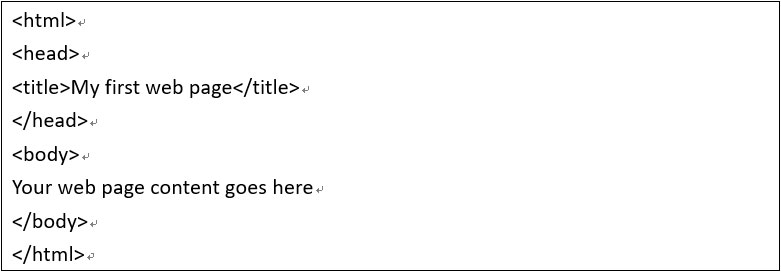

超文本标记语言（英语：HyperText Markup Language，简称：HTML）是一种用于创建网页的标准标记语言。
HTML是一种基础技术，常与CSS、JavaScript一起被众多网站用于设计网页、网页应用程序以及移动应用程序的用户界面。
网页浏览器可以读取HTML文件，并将其渲染成可视化网页。HTML描述了一个网站的结构语义随着线索的呈现，使之成为一种标记语言而非编程语言。

HTML代表超文本标记语言，用于使用标记语言设计网页。 HTML是超文本和标记语言的组合，超文本定义了网页之间的链接；标记语言用于定义标记内的文本文档，该文档定义网页的结构。 此语言用于注释（在计算机注释中）文本，以便机器可以理解它并相应地操作文本。 大多数标记（例如HTML）语言都是人类可读的。 该语言使用标签来定义必须对文本进行哪些操作。 它用于在网页上构造和呈现内容。 HTML5是HTML的第五个版本，HTML5中删除或修改了许多元素。
此外，两者结构语义也有所不同。HTML没有结构语义化的标签，通常以< divid="header">来命名，HTML5则增加了很多语义化的标签，比如:< header> 、< nav>、< article>、< aside>、< footer>等，使代码结构清晰，更加具有可读性。
HTML5新增了强大的绘图功能，通过绘画功能，加上JS可以实现动画以及图片。而HTML4.0却不行。在HTML5中，Canvas和SVG可以进行绘图，Canvas相当于一个画布，可以通过JavaScript 来绘制 2D 图形，Canvas 是逐像素进行渲染的。 SVG是可伸缩矢量图形，用于定义网络的基于矢量的图形，SVG 严格遵从 XML 语法，其图像文件可读并且易于修改和编辑，可以被搜索、索引、脚本化或者压缩。可以在任何分辨率下被高质量地打印。
除了上述几点，强大的HTML5还新增了视频标签。这个功能是HTML4.0所不具备的，用HTML4.0插入视频需要很长一段代码，但是用HTML5就只需要video标签即可。